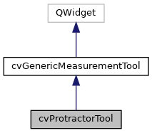
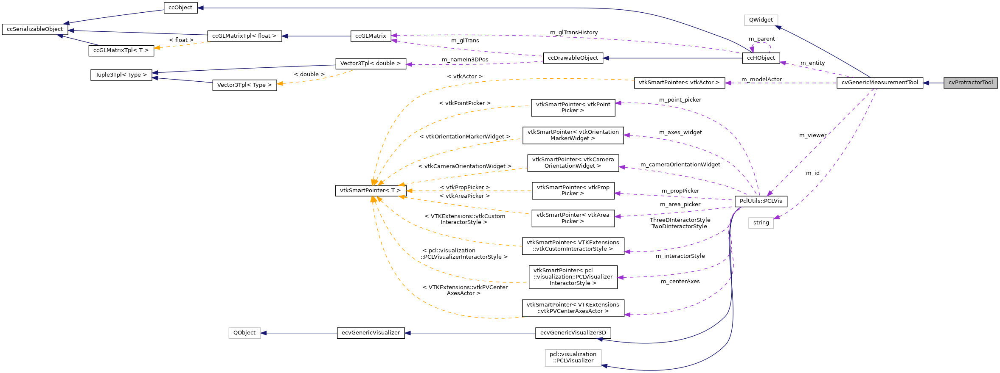

|
ACloudViewer
3.9.4
A Modern Library for 3D Data Processing
|
|
ACloudViewer
3.9.4
A Modern Library for 3D Data Processing
|
#include <cvProtractorTool.h>


Public Member Functions | |
| cvProtractorTool (QWidget *parent=nullptr) | |
| ~cvProtractorTool () override | |
| virtual void | start () override |
| virtual void | reset () override |
| virtual void | showWidget (bool state) override |
| virtual ccHObject * | getOutput () override |
| virtual double | getMeasurementValue () const override |
| Get measurement value (distance or angle) More... | |
| virtual void | getPoint1 (double pos[3]) const override |
| Get point 1 coordinates. More... | |
| virtual void | getPoint2 (double pos[3]) const override |
| Get point 2 coordinates. More... | |
| virtual void | getCenter (double pos[3]) const override |
| Get center point coordinates (for angle/protractor) More... | |
| virtual void | setPoint1 (double pos[3]) override |
| Set point 1 coordinates. More... | |
| virtual void | setPoint2 (double pos[3]) override |
| Set point 2 coordinates. More... | |
| virtual void | setCenter (double pos[3]) override |
| Set center point coordinates (for angle/protractor) More... | |
| virtual void | setColor (double r, double g, double b) override |
| Set measurement color (RGB values in range [0.0, 1.0]) More... | |
| virtual bool | getColor (double &r, double &g, double &b) const override |
| virtual void | lockInteraction () override |
| Lock tool interaction (disable VTK widget interaction and UI controls) More... | |
| virtual void | unlockInteraction () override |
| Unlock tool interaction (enable VTK widget interaction and UI controls) More... | |
| virtual void | setInstanceLabel (const QString &label) override |
| Set instance label suffix (e.g., "#1", "#2") for display in 3D view. More... | |
 Public Member Functions inherited from cvGenericMeasurementTool Public Member Functions inherited from cvGenericMeasurementTool | |
| cvGenericMeasurementTool (QWidget *parent=nullptr) | |
| virtual | ~cvGenericMeasurementTool () |
| virtual void | update () |
| virtual bool | initModel () |
| virtual bool | setInput (ccHObject *obj) |
| virtual void | clearAllActor () |
| virtual void | setFontFamily (const QString &family) |
| virtual void | setFontSize (int size) |
| Set font size for measurement labels. More... | |
| virtual void | setBold (bool bold) |
| Set font bold state for measurement labels. More... | |
| virtual void | setItalic (bool italic) |
| Set font italic state for measurement labels. More... | |
| virtual void | setShadow (bool shadow) |
| Set font shadow state for measurement labels. More... | |
| virtual void | setFontOpacity (double opacity) |
| Set font opacity for measurement labels (0.0 to 1.0) More... | |
| virtual void | setFontColor (double r, double g, double b) |
| Set font color for measurement labels (RGB values 0.0-1.0) More... | |
| virtual void | setHorizontalJustification (const QString &justification) |
| virtual void | setVerticalJustification (const QString &justification) |
| QString | getFontFamily () const |
| Get font properties (for UI synchronization) More... | |
| int | getFontSize () const |
| void | getFontColor (double &r, double &g, double &b) const |
| bool | getFontBold () const |
| bool | getFontItalic () const |
| bool | getFontShadow () const |
| double | getFontOpacity () const |
| QString | getHorizontalJustification () const |
| QString | getVerticalJustification () const |
| void | setUpViewer (PclUtils::PCLVis *viewer) |
| void | setInteractor (vtkRenderWindowInteractor *interactor) |
| vtkRenderWindowInteractor * | getInteractor () |
| vtkRenderer * | getRenderer () |
| void | setupShortcuts (QWidget *vtkWidget) |
| void | disableShortcuts () |
| Disable all keyboard shortcuts (call before tool destruction) More... | |
| void | clearPickingCache () |
Protected Member Functions | |
| virtual void | initTool () override |
| virtual void | createUi () override |
| virtual void | setupPointPickingShortcuts (QWidget *vtkWidget) override |
| Protected Member Functions inherited from cvGenericMeasurementTool | |
| virtual void | modelReady () |
| virtual void | dataChanged () |
| void | safeOff (vtkAbstractWidget *widget) |
| void | updatePickingHelpers () |
| Update point picking helpers with current interactor/renderer. More... | |
| void | addActor (const vtkSmartPointer< vtkProp > actor) |
| void | removeActor (const vtkSmartPointer< vtkProp > actor) |
Additional Inherited Members | |
| Signals inherited from cvGenericMeasurementTool | |
| void | measurementValueChanged () |
| Signal sent when the measurement value changes. More... | |
| void | pointPickingRequested (int pointIndex) |
| void | pointPickingCancelled () |
| Signal sent when point picking is cancelled. More... | |
| Protected Attributes inherited from cvGenericMeasurementTool | |
| Ui::GenericMeasurementToolDlg * | m_ui = nullptr |
| std::string | m_id |
| ccHObject * | m_entity = nullptr |
| PclUtils::PCLVis * | m_viewer = nullptr |
| vtkRenderWindowInteractor * | m_interactor = nullptr |
| vtkRenderer * | m_renderer = nullptr |
| vtkSmartPointer< vtkActor > | m_modelActor |
| QList< cvPointPickingHelper * > | m_pickingHelpers |
| List of point picking helpers for keyboard shortcuts. More... | |
| QWidget * | m_vtkWidget = nullptr |
| VTK widget reference for creating shortcuts (saved from linkWith) More... | |
| QString | m_fontFamily = "Arial" |
| Font properties for measurement labels (shared by all tools) More... | |
| int | m_fontSize = 6 |
| double | m_fontColor [3] = {1.0, 1.0, 1.0} |
| bool | m_fontBold = false |
| bool | m_fontItalic = false |
| bool | m_fontShadow = true |
| double | m_fontOpacity = 1.0 |
| QString | m_horizontalJustification = "Left" |
| QString | m_verticalJustification = "Bottom" |
Definition at line 20 of file cvProtractorTool.h.
|
explicit |
Definition at line 102 of file cvProtractorTool.cpp.
References cvGenericMeasurementTool::m_fontSize.
|
override |
Definition at line 111 of file cvProtractorTool.cpp.
References cvGenericMeasurementTool::m_interactor.
|
overrideprotectedvirtual |
Reimplemented from cvGenericMeasurementTool.
Definition at line 254 of file cvProtractorTool.cpp.
References CVLog::Error(), cvGenericMeasurementTool::m_ui, and cloudViewer::core::Minimum().
|
overridevirtual |
Get center point coordinates (for angle/protractor)
Reimplemented from cvGenericMeasurementTool.
Definition at line 813 of file cvProtractorTool.cpp.
Referenced by getOutput().
|
overridevirtual |
Get measurement color (RGB values in range [0.0, 1.0]) Returns false if not implemented, true if color is retrieved
Reimplemented from cvGenericMeasurementTool.
Definition at line 948 of file cvProtractorTool.cpp.
|
overridevirtual |
Get measurement value (distance or angle)
Reimplemented from cvGenericMeasurementTool.
Definition at line 786 of file cvProtractorTool.cpp.
Referenced by getOutput().
|
overridevirtual |
Reimplemented from cvGenericMeasurementTool.
Definition at line 571 of file cvProtractorTool.cpp.
References cc2DLabel::addPickedPoint(), cloudViewer::PointCloudTpl< T >::addPoint(), cc2DLabel::displayPointLegend(), ccGenericMesh::getAssociatedCloud(), getCenter(), getMeasurementValue(), cloudViewer::GenericIndexedCloud::getPoint(), getPoint1(), getPoint2(), ccObject::isKindOf(), cvGenericMeasurementTool::m_entity, cvGenericMeasurementTool::m_interactor, cvGenericMeasurementTool::m_renderer, CV_TYPES::MESH, CV_TYPES::POINT_CLOUD, CVLog::Print(), CVLog::PrintVerbose(), ccPointCloud::reserve(), cc2DLabel::setCollapsed(), cc2DLabel::setDisplayedIn2D(), ccObject::setEnabled(), cc2DLabel::setPosition(), ccDrawableObject::setVisible(), cloudViewer::GenericCloud::size(), cloudViewer::PointCloudTpl< T >::size(), ccHObjectCaster::ToPointCloud(), and CVLog::Warning().
|
overridevirtual |
Get point 1 coordinates.
Reimplemented from cvGenericMeasurementTool.
Definition at line 793 of file cvProtractorTool.cpp.
Referenced by getOutput().
|
overridevirtual |
Get point 2 coordinates.
Reimplemented from cvGenericMeasurementTool.
Definition at line 803 of file cvProtractorTool.cpp.
Referenced by getOutput().
|
overrideprotectedvirtual |
Reimplemented from cvGenericMeasurementTool.
Definition at line 141 of file cvProtractorTool.cpp.
References ccHObject::getBB_recursive(), cloudViewer::BoundingBoxTpl< T >::getCenter(), cloudViewer::BoundingBoxTpl< T >::getDiagVec(), cloudViewer::BoundingBoxTpl< T >::isValid(), cvGenericMeasurementTool::m_entity, cvGenericMeasurementTool::m_interactor, cvGenericMeasurementTool::m_renderer, Vector3Tpl< Type >::norm(), offset, VtkUtils::vtkInitOnce(), Tuple3Tpl< Type >::x, Tuple3Tpl< Type >::y, and Tuple3Tpl< Type >::z.
|
overridevirtual |
Lock tool interaction (disable VTK widget interaction and UI controls)
Reimplemented from cvGenericMeasurementTool.
Definition at line 955 of file cvProtractorTool.cpp.
References cvGenericMeasurementTool::disableShortcuts(), and cvGenericMeasurementTool::m_interactor.
|
overridevirtual |
Reimplemented from cvGenericMeasurementTool.
Definition at line 399 of file cvProtractorTool.cpp.
References ccHObject::getBB_recursive(), cloudViewer::BoundingBoxTpl< T >::getCenter(), cloudViewer::BoundingBoxTpl< T >::getDiagVec(), cloudViewer::BoundingBoxTpl< T >::isValid(), cvGenericMeasurementTool::m_entity, cvGenericMeasurementTool::measurementValueChanged(), Vector3Tpl< Type >::norm(), offset, cvGenericMeasurementTool::update(), Tuple3Tpl< Type >::x, Tuple3Tpl< Type >::y, and Tuple3Tpl< Type >::z.
|
overridevirtual |
Set center point coordinates (for angle/protractor)
Reimplemented from cvGenericMeasurementTool.
Definition at line 889 of file cvProtractorTool.cpp.
References cvGenericMeasurementTool::update().
|
overridevirtual |
Set measurement color (RGB values in range [0.0, 1.0])
Reimplemented from cvGenericMeasurementTool.
Definition at line 922 of file cvProtractorTool.cpp.
References cvGenericMeasurementTool::update().
|
overridevirtual |
Set instance label suffix (e.g., "#1", "#2") for display in 3D view.
Reimplemented from cvGenericMeasurementTool.
Definition at line 1191 of file cvProtractorTool.cpp.
|
overridevirtual |
Set point 1 coordinates.
Reimplemented from cvGenericMeasurementTool.
Definition at line 823 of file cvProtractorTool.cpp.
References cvGenericMeasurementTool::update().
|
overridevirtual |
Set point 2 coordinates.
Reimplemented from cvGenericMeasurementTool.
Definition at line 856 of file cvProtractorTool.cpp.
References cvGenericMeasurementTool::update().
|
overrideprotectedvirtual |
Setup keyboard shortcuts for point picking Override in derived classes to add specific shortcuts
| vtkWidget | The VTK render window widget to bind shortcuts to |
Reimplemented from cvGenericMeasurementTool.
Definition at line 478 of file cvProtractorTool.cpp.
References cvGenericMeasurementTool::m_interactor, cvGenericMeasurementTool::m_pickingHelpers, cvGenericMeasurementTool::m_renderer, cvPointPickingHelper::pick(), cvPointPickingHelper::setContextWidget(), cvPointPickingHelper::setInteractor(), and cvPointPickingHelper::setRenderer().
|
overridevirtual |
Reimplemented from cvGenericMeasurementTool.
Definition at line 542 of file cvProtractorTool.cpp.
References cvGenericMeasurementTool::update().
|
overridevirtual |
Reimplemented from cvGenericMeasurementTool.
Definition at line 392 of file cvProtractorTool.cpp.
References cvGenericMeasurementTool::start().
|
overridevirtual |
Unlock tool interaction (enable VTK widget interaction and UI controls)
Reimplemented from cvGenericMeasurementTool.
Definition at line 1048 of file cvProtractorTool.cpp.
References cvGenericMeasurementTool::m_fontColor, cvGenericMeasurementTool::m_fontOpacity, cvGenericMeasurementTool::m_interactor, cvGenericMeasurementTool::m_pickingHelpers, cvGenericMeasurementTool::m_vtkWidget, CVLog::PrintDebug(), cvGenericMeasurementTool::setupShortcuts(), and cvGenericMeasurementTool::updatePickingHelpers().